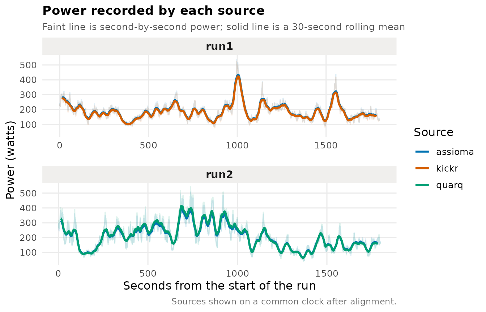
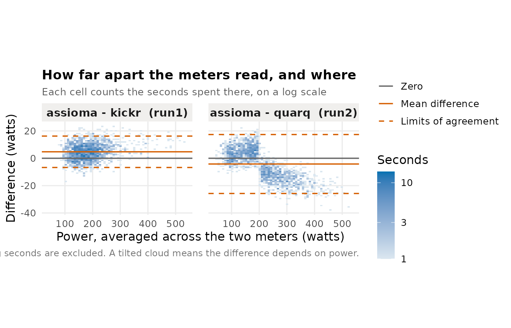
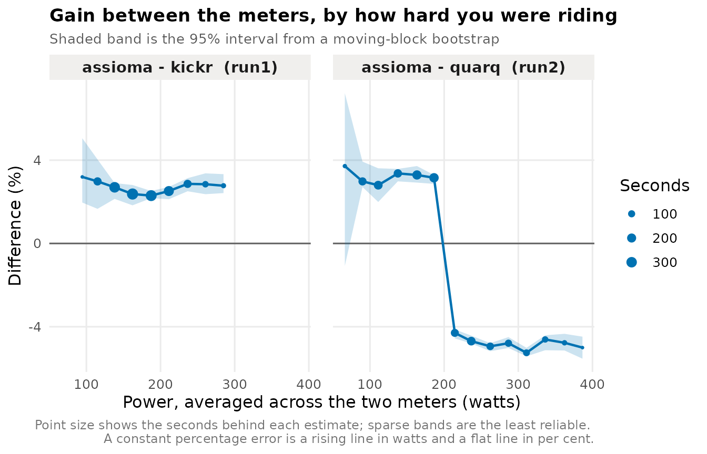
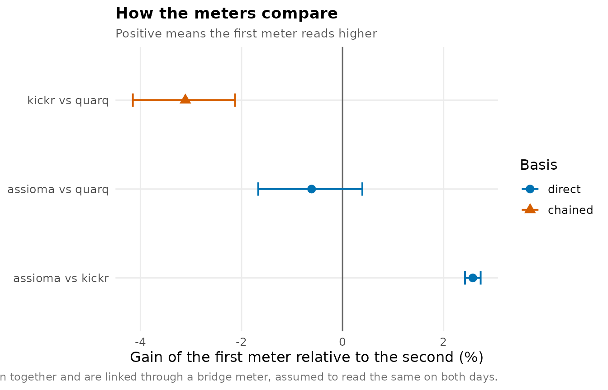

Two power meters on the same bike rarely agree exactly, and the interesting question is not whether they differ but by how much, and whether the gap is steady or opens up as you push harder. This vignette walks through that comparison, then through the harder case where a third meter has to be brought onto the same scale without ever having been ridden alongside the first.
Everything below runs on demo_rides(), which writes a
small set of ride files with distortions chosen in advance, so every
number has a known answer to check against. Two sessions:
| Run | Meters | What was planted |
|---|---|---|
| run1 | assioma, kickr | kickr reads 2.5% low, and its clock runs 7 s fast |
| run2 | assioma, quarq | quarq reads 3% low below 200 W and 5% high above it |
assioma is in both, which is what makes the third meter reachable at the end.
dir <- demo_rides()
list.files(dir)
#> [1] "run1_assioma.csv" "run1_kickr.csv" "run2_assioma.csv" "run2_quarq.csv"Real files replace these unchanged.
vignette("recording_rides") covers how to record them, and
several of the decisions there — recording rate, auto-pause, and what to
ride — determine whether the steps below can work at all.
Getting files into the comparison
The unit of analysis is a run, meaning one session ridden once,
recorded by two or more sources. Hand read_rides() a
directory and it reads the run and source
labels off filenames shaped run1_kickr.csv:
rides <- read_rides(dir)
rides
#> # A tibble: 7,200 × 4
#> run source time power
#> <chr> <chr> <dttm> <dbl>
#> 1 run1 assioma 2026-03-14 09:00:00 234.
#> 2 run1 assioma 2026-03-14 09:00:01 227.
#> 3 run1 assioma 2026-03-14 09:00:02 243.
#> 4 run1 assioma 2026-03-14 09:00:03 220.
#> 5 run1 assioma 2026-03-14 09:00:04 248.
#> 6 run1 assioma 2026-03-14 09:00:05 251.
#> 7 run1 assioma 2026-03-14 09:00:06 264.
#> 8 run1 assioma 2026-03-14 09:00:07 291.
#> 9 run1 assioma 2026-03-14 09:00:08 298.
#> 10 run1 assioma 2026-03-14 09:00:09 305
#> # ℹ 7,190 more rowsEvery reader returns this same shape whatever the file format, so a
GPX exported from Strava and a FIT pulled off a head unit arrive with
the same column names and types. time and
power are always present; the other channels appear when
the file carries them.
Where the filenames do not carry the labels, build the table yourself
and pass that instead — read_rides() takes a data frame of
path, run and source just as
happily as a directory. A filename that does not split cleanly is an
error rather than a silently missing label.
Putting the sources on one clock
That seven-second offset matters. Differencing the two series on
their nominal timestamps compares power from one moment against power
from another, which inflates the spread and shifts the average
difference, and nothing about the result announces that it has happened.
align_rides() resamples each source onto a one-second grid
and recovers the offset by cross-correlating the power traces.
aligned <- align_rides(rides)
alignment_report(aligned)
#> # A tibble: 4 × 7
#> run source reference offset correlation sharpness status
#> <chr> <chr> <chr> <dbl> <dbl> <dbl> <chr>
#> 1 run1 assioma assioma 0 NA NA assumed
#> 2 run1 kickr assioma 7 0.996 0.113 aligned
#> 3 run2 assioma assioma 0 NA NA assumed
#> 4 run2 quarq assioma 0 0.997 0.135 alignedThe seven seconds planted in kickr’s clock come back as seven.
offset is the correction applied, correlation
how well the traces matched at that offset, and status
whether the offset was established at all. Where both channels came off
a single head unit the offset is zero and the same code path serves.
Where a ride was too steady to lock onto — a long block at constant
power has no features to align against — the status comes back
unresolved, the recorded timestamps stand, and a warning
says so.
plot_timeseries(aligned)
How far apart do they read?
power_agreement(aligned)
#> run1: assioma reads 2.6% higher than kickr (95% CI 2.4 to 2.7, from 1,800 seconds)
#> run2: assioma reads 0.6% lower than quarq (95% CI -0.4 to 1.7, from 1,800 seconds)
#>
#> # A tibble: 2 × 13
#> run source_a source_b seconds bias_w bias_lo bias_hi sd_difference loa_lo
#> <chr> <chr> <chr> <int> <dbl> <dbl> <dbl> <dbl> <dbl>
#> 1 run1 assioma kickr 1800 4.74 4.20 5.23 5.86 -6.74
#> 2 run2 assioma quarq 1800 -4.19 -6.82 -1.74 11.0 -25.7
#> # ℹ 4 more variables: loa_hi <dbl>, gain_pc <dbl>, gain_lo <dbl>, gain_hi <dbl>The sentence above the table is the answer; the columns are there to
check it. bias_w is the average difference in watts and
gain_pc the same thing multiplicatively, which is usually
the more natural way to think about a power meter, since meters tend to
be a few per cent out rather than a fixed number of watts out. kickr was
built to read 2.5 per cent low, and assioma against it comes back at
about 2.6 per cent, which is 1 / 0.975 - 1.
loa_lo and loa_hi bound the range within which
most individual seconds fall — a much wider range than the interval on
the average, and a different question.
Look at run2, though. Its interval straddles zero, which reads as these two meters agree. Hold that thought.
The intervals come from a moving-block bootstrap rather than from treating each second as an independent observation. Per-second power is heavily autocorrelated — what you are riding now is nearly what you were riding a second ago — so an hour’s recording carries far less independent information than its 3,600 rows suggest, and an interval built on the independence assumption would be roughly an order of magnitude too narrow.
plot_agreement(aligned)
Does the gap change with effort?
A single average difference hides the pattern that usually matters,
which is a meter agreeing at endurance pace and drifting at threshold.
agreement_by_level() bins the seconds by the mean of the
two readings and reports the difference within each band.
by_level <- agreement_by_level(aligned, width = 25)
plot_by_level(by_level, scale = "percent")
There is run2. The overall figure said the two meters agreed to within half a per cent; the bands show quarq reading about three per cent low up to 200 W and about five per cent high above it. The average was not wrong — the errors really do cancel over this ride — but it describes no part of the range, and on a ride weighted differently it would have come out somewhere else entirely.
Seconds are binned on the mean of the two meters, never on one nominated meter. If you bin by assioma and then plot assioma minus quarq against those bins, assioma’s own measurement noise pushes the points into a slope, and the trend you see is an artefact of the plotting.
level_dependence() states it rather than leaving it to
the eye:
level_dependence(by_level)
#> # A tibble: 2 × 8
#> run source_a source_b low_band low_gain high_band high_gain separated
#> <chr> <chr> <chr> <chr> <dbl> <chr> <dbl> <lgl>
#> 1 run1 assioma kickr 175–200 W 2.30 75–100 W 3.20 FALSE
#> 2 run2 assioma quarq 300–325 W -5.25 50–75 W 3.71 TRUEseparated is whether the extreme bands’ 95% intervals
overlap, so a pair with too few seconds to resolve anything does not
fire. run1’s clean 2.5 per cent gain is flat across the range and does
not separate; run2 does.
seconds travels with every row because time is not
spread evenly across the power range. The ends are usually thin, and an
estimate resting on twenty seconds deserves less weight than one resting
on six hundred.
Bringing in a third meter
Now the awkward case. run1 carried assioma and kickr, run2 carried assioma and quarq. kickr and quarq have never been on the bike together, so there is no second at which both were measuring. assioma is the bridge: each run gives a gain relative to it, and the difference between those two gains is kickr against quarq.
chained <- chain_sources(aligned)
chained
#> assioma reads 2.6% higher than kickr (95% CI 2.4 to 2.7)
#> assioma reads 0.6% lower than quarq (95% CI -0.4 to 1.7)
#> kickr reads 3.1% lower than quarq (95% CI 2.1 to 4.2), chained via assioma
#>
#> A chained pair assumes the bridge read identically on both days.
#> The rides cannot test that. See chain_report().
#>
#> # A tibble: 3 × 7
#> source_a source_b basis gain_pc gain_lo gain_hi via
#> <chr> <chr> <chr> <dbl> <dbl> <dbl> <chr>
#> 1 assioma kickr direct 2.58 2.42 2.73 NA
#> 2 assioma quarq direct -0.613 -1.67 0.392 NA
#> 3 kickr quarq chained -3.11 -4.15 -2.13 assiomaThe basis column marks the last row as chained rather
than directly observed. The two direct comparisons rest on seconds where
both meters measured the same effort; the chained one rests on an
assumption as well.
plot_chain(chained)
The assumption is that assioma read the same on both days, and
nothing in the ride files can test it. A meter that drifted between the
two sessions moves the kickr-to-quarq figure by exactly the amount it
drifted, and nothing in the data separates that from a difference
between the meters. That is why the print method says so without being
asked. chain_report() states it again and reports what
can be checked, which is whether the two runs covered
comparable power — gains estimated over different parts of the range are
not really comparable at all.
report <- chain_report(chained)
report$assumption
#> [1] "Chained comparisons assume assioma read the same in every run. Nothing in the ride files can test that; any drift in assioma between runs is indistinguishable from a real difference between the meters being compared."
report$overlap
#> [1] 0.5596874
report$coverage
#> # A tibble: 2 × 5
#> run seconds median_power p10 p90
#> <chr> <int> <dbl> <dbl> <dbl>
#> 1 run1 1800 179. 125. 255.
#> 2 run2 1800 191. 99.0 331.The chained interval is wider than either direct one it is built from. It has to be: two independently bootstrapped runs are being subtracted.
Doing all of it at once
compare_report() runs this whole sequence and writes it
out as a single HTML document, which is usually what you want once the
exploration is done. It takes the same directory:
compare_report(dir, "power-comparison.html")launch_app() opens the same pipeline as a local web
interface, with the settings live and a download button that renders the
report from the results already on screen.
Reading FIT files
FIT needs FITfileR, which is not
on CRAN. Everything above works without it; only .fit input
needs it.
read_file(system.file("extdata", "power1.fit", package = "cyclingpower")) |>
head(3)
#> # A tibble: 3 × 6
#> time power cadence heart_rate speed distance
#> <dttm> <dbl> <dbl> <dbl> <dbl> <dbl>
#> 1 2020-11-15 19:03:24 193 87 76 3.69 3.69
#> 2 2020-11-15 19:03:25 207 86 76 4.28 7.97
#> 3 2020-11-15 19:03:26 218 88 74 4.86 12.8